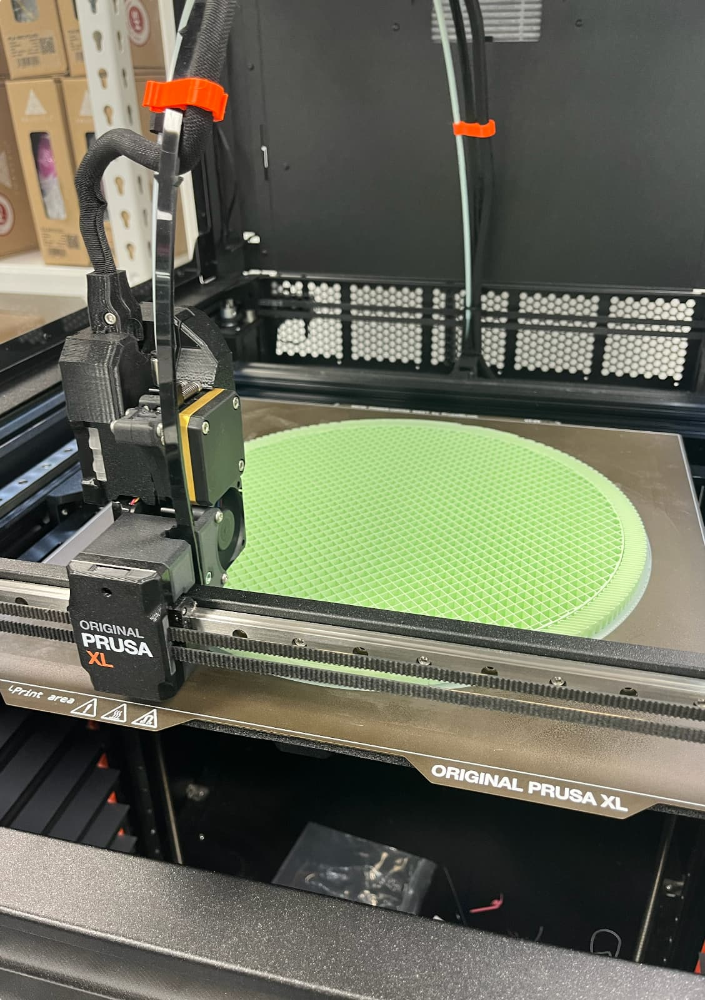
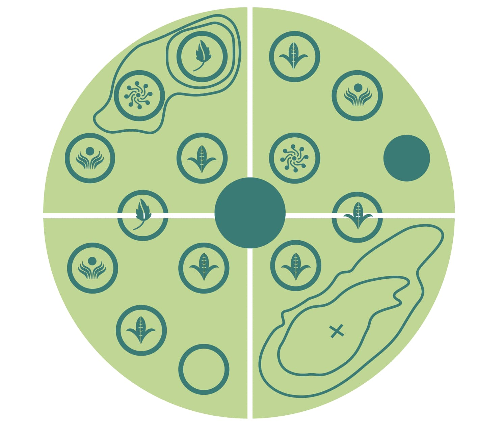
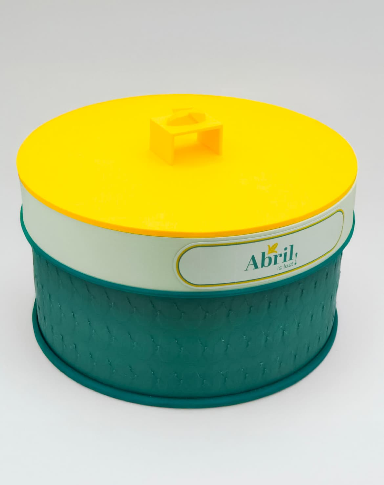
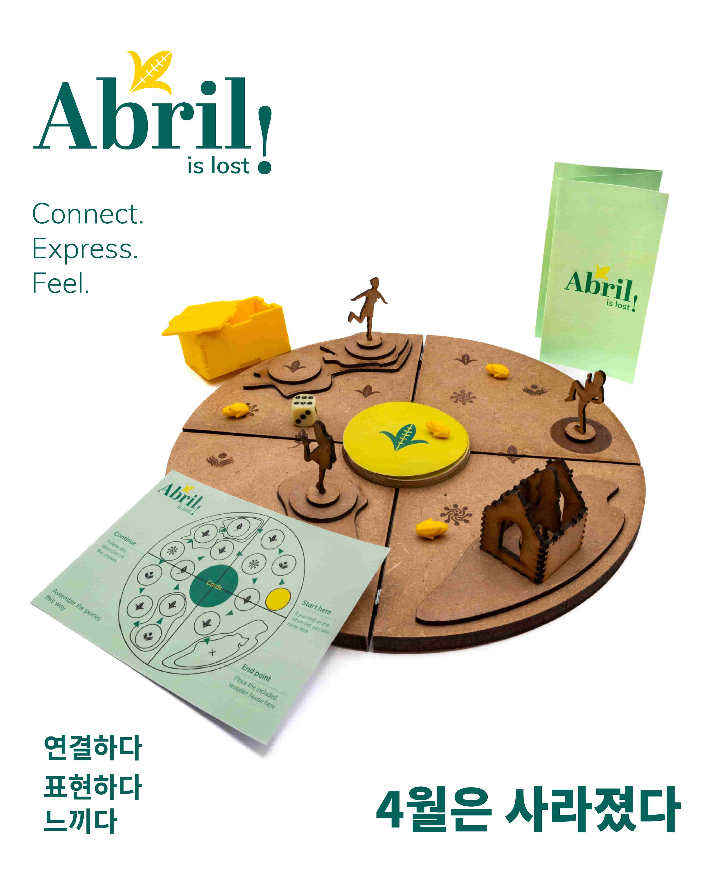

Contexto
“Abril is lost!” es un juego de mesa artesanal diseñado para fomentar la comunicación y la conexión interpersonal, especialmente entre personas con dificultades para expresarse. El juego utiliza tarjetas con preguntas basadas en diálogos, fichas y piezas de personajes que se unen sobre un tablero circular de madera e incitan a los jugadores a participar con psicólogos o sus familias. Los componentes están organizados en una práctica y atractiva caja circular para guardarlos al terminar.
Proceso
El juego está fabricado con corte láser e impresión 3D. El tablero se diseñó separado en cuatro partes para facilitar su almacenamiento, de manera que ocupa el mínimo espacio posible dentro de la caja. Para que el montaje sea sencillo e intuitivo, cada pieza incorpora imanes que las mantienen unidas durante el juego y permiten desmontarlo sin esfuerzo.


Resultado
El juego también incluye una narrativa lúdica: el jugador que saque el número más alto se convierte en “Abril”, el juez de la ronda. Abril lee las preguntas, escucha las respuestas y elige las que le parecen más sinceras, reflexivas o conmovedoras, lo que le otorga un paso adicional. El objetivo final es ser el primero en llegar a la casa donde Abril los espera y completar el viaje.


Ficha técnica
- Año
- 2024
- Asignatura
- Tipografía
- Categoría
- Diseño de Producto, Diseño Gráfico
- Herramientas
- Adobe Illustrator, InDesign,Rhino 3D, Prusa